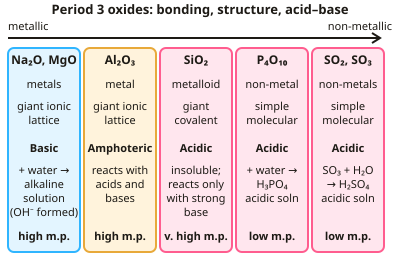

A-level Chemistry Year 13 · Topic 2
Inorganic chemistry
Inorganic chemistry at A2 focuses on the Period 3 oxides and, above all, the colourful chemistry of the transition metals.
We will explain why transition metal complexes are coloured, how ligands bond and swap, and how metal aqua ions react with hydroxide, ammonia and carbonate.
Then we use redox titrations and colorimetry to analyse compounds, and carry out the test-tube reactions and the preparation of a complex.
- 7 subtopics
- 314 questions
- Free: 2.1 notes and 10 questions
In this topic
- 2.1Properties of Period 3 elements and their oxidesFree below · 21 questions
- 2.2Transition metalsOpen in Full Marks · 23 questions
- 2.3Reactions of ions in aqueous solutionOpen in Full Marks · 58 questions
- 2.4Redox titrations: manganate(VII), dichromate(VI) and iodine–thiosulfate calculationsOpen in Full Marks · 76 questions
- 2.5Colorimetry and visible spectroscopy: determining the concentration and formula of complex ionsOpen in Full Marks · 68 questions
- 2.6Practical: test-tube reactions of transition metal ions (precipitation, ligand exchange, redox)Open in Full Marks · 30 questions
- 2.7Practical: preparation of a transition metal complexOpen in Full Marks · 38 questions
2.1 · Free notes
Properties of Period 3 elements and their oxides

Key points
- Across Period 3, elements change from metallic (Na, Mg, Al) to metalloid/non-metallic (Si) to non-metallic (P, S, Cl, Ar).
- Na₂O and MgO are ionic, basic oxides that react with water to form alkaline hydroxide solutions.
- Al₂O₃ is amphoteric, reacting with both acids and bases.
- SiO₂ is a giant covalent, acidic oxide, reacting only with strong bases.
- P₄O₁₀ and SO₂/SO₃ are simple molecular, acidic oxides, reacting with water to form acidic solutions, e.g. SO₃ + H₂O → H₂SO₄.
In more detail
- Reactions with water: Na₂O + H₂O → 2NaOH (pH 14); MgO + H₂O → Mg(OH)₂ (pH 9, slightly soluble); SO₂ + H₂O → H₂SO₃ (pH 2–3); SO₃ + H₂O → H₂SO₄ (pH 0–1); P₄O₁₀ + 6H₂O → 4H₃PO₄.
- Amphoteric Al₂O₃: Al₂O₃ + 6HCl → 2AlCl₃ + 3H₂O and Al₂O₃ + 2NaOH + 3H₂O → 2NaAl(OH)₄.
- Melting points of oxides: MgO highest (ionic, 2+ and 2− ions); SiO₂ high (giant covalent); P₄O₁₀ and SO₃ low (simple molecular, weak intermolecular forces).
- SiO₂ with base: SiO₂ + 2NaOH → Na₂SiO₃ + H₂O, only with hot, concentrated NaOH; SiO₂ is insoluble in water.
Practice
Properties of Period 3 elements and their oxides: 10 questions
Pick an answer to check it, or open the answer for the explanation.
1. What type of oxide is Na₂O?
- Acidic
- Basic (ionic)
- Amphoteric
- Neutral
Show answer
B: Basic (ionic). It reacts with water to form an alkaline solution.
2. Which Period 3 oxide is described as amphoteric?
- MgO
- Al₂O₃
- SiO₂
- SO₃
Show answer
B: Al₂O₃. Aluminium oxide can react with both acids and bases.
3. What type of structure does SiO₂ have?
- Simple molecular
- Giant covalent
- Giant ionic
- Metallic
Show answer
B: Giant covalent. This gives it a very high melting point compared to the other Period 3 oxides.
4. What is formed when SO₃ reacts with water?
- Sodium hydroxide
- Sulfuric acid
- Sulfur
- Hydrogen
Show answer
B: Sulfuric acid. SO₃ + H₂O → H₂SO₄.
5. How does bonding across Period 3 oxides generally change from left to right?
- It stays entirely ionic
- It changes from ionic to giant covalent to simple molecular
- It stays entirely covalent
- It becomes entirely metallic
Show answer
B: It changes from ionic to giant covalent to simple molecular. This reflects the change from metallic to non-metallic elements.
6. Which Period 3 element's oxide reacts with both acids and alkalis?
- Sodium
- Magnesium
- Aluminium
- Silicon
Show answer
C: Aluminium. Al₂O₃ is amphoteric.
7. Na₂O is added to water. Which equation correctly describes the reaction?
- Na₂O + 2H₂O → Na(OH)₂ + H₂
- Na₂O + H₂O → 2Na + H₂O₂
- Na₂O + H₂O → Na₂O₂ + H₂
- Na₂O + H₂O → 2NaOH
Show answer
D: Na₂O + H₂O → 2NaOH. The O²⁻ ion is a strong base and takes a proton from water: O²⁻ + H₂O → 2OH⁻. This gives Na₂O + H₂O → 2NaOH, a strongly alkaline solution. No H₂ is released.
8. MgO shaken with water gives a solution of pH about 10, but Na₂O gives pH about 14. What is the best explanation?
- Mg²⁺ ions neutralise the OH⁻ ions completely
- MgO reacts with water to form an acid
- Mg(OH)₂ is only sparingly soluble, so [OH⁻] is low
- MgO is covalent and does not contain O²⁻ ions
Show answer
C: Mg(OH)₂ is only sparingly soluble, so [OH⁻] is low. MgO is ionic and basic, but the Mg(OH)₂ formed is only sparingly soluble. Few OH⁻ ions enter solution, so the pH is only weakly alkaline compared with NaOH.
9. Al₂O₃ is warmed with concentrated NaOH(aq) until it dissolves. Which aluminium-containing product forms?
- AlCl₃
- Al metal
- Na[Al(OH)₄]
- AlH₃
Show answer
C: Na[Al(OH)₄]. Al₂O₃ is amphoteric and acts as an acid towards a strong base: Al₂O₃ + 2NaOH + 3H₂O → 2Na[Al(OH)₄]. This soluble hydroxo complex is the aluminium product.
10. Solid SiO₂ is heated with concentrated NaOH. Which equation represents the reaction?
- SiO₂ + 2NaOH → Na₂O + Si(OH)₂
- SiO₂ + 2NaOH → Na₂SiO₃ + H₂O
- SiO₂ + 2NaOH → Na₂Si + H₂O₂
- SiO₂ + NaOH → NaSiO₂ + H₂
Show answer
B: SiO₂ + 2NaOH → Na₂SiO₃ + H₂O. SiO₂ is an acidic oxide, so it reacts with strong bases to form a salt and water. The product is sodium silicate, Na₂SiO₃. It does not react with water or dilute acids.
Keep going in Full Marks
Full Marks has 21 questions on Properties of Period 3 elements and their oxides (11 more than here), set out in practice levels. You also get notes and 3D models for all 7 subtopics of Inorganic chemistry, plus games, timed exams and past papers.
On your exam board
- AQATopic 3.2.4: Properties of Period 3 elements and their oxides, Topic 3.2.5: Transition metals, Topic 3.2.6: Reactions of ions in aqueous solution
- OCR ATopic 5.2.3: Redox and electrode potentials, Topic 5.3.1: Transition elements, Topic 5.3.2: Qualitative analysis
- OCR BTopic DM: Developing metals
- EdexcelTopic 14: Redox II, Topic 15: Transition metals
- CambridgeTopic 28: Chemistry of transition elements